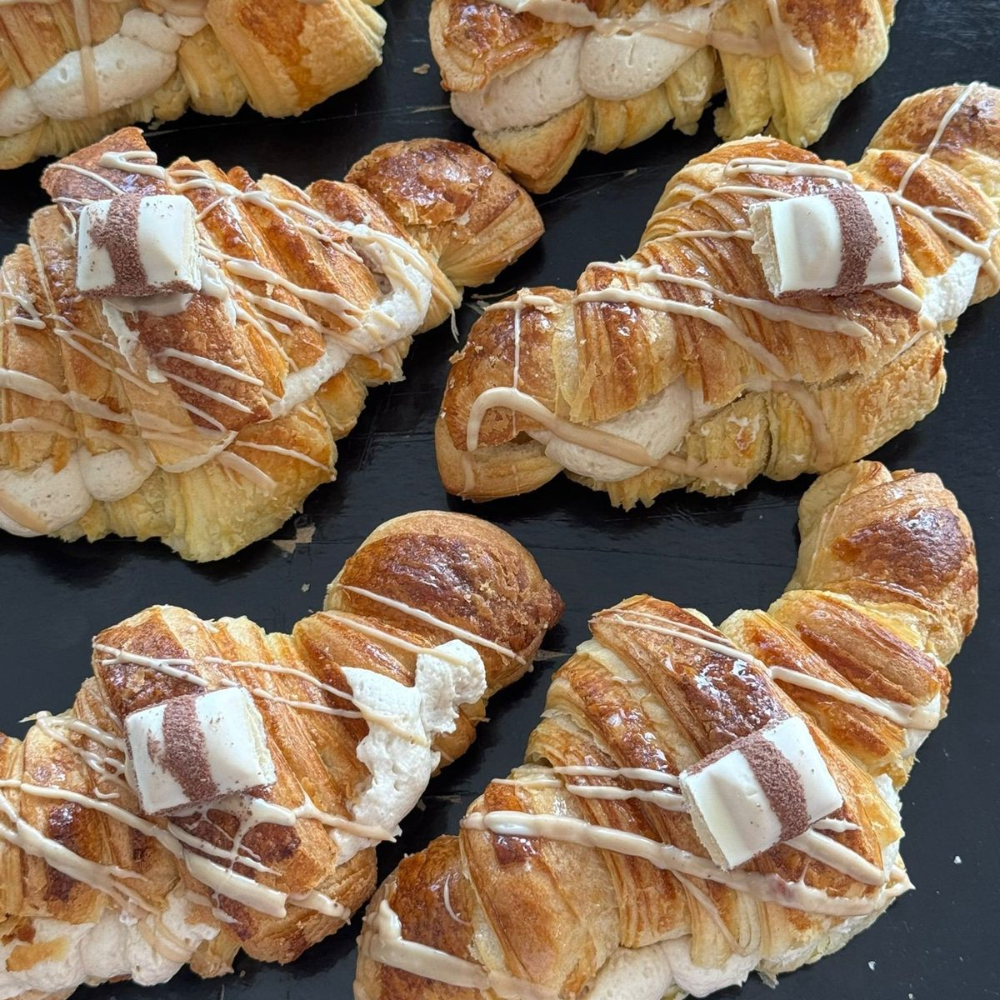
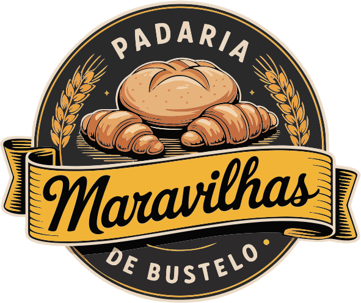
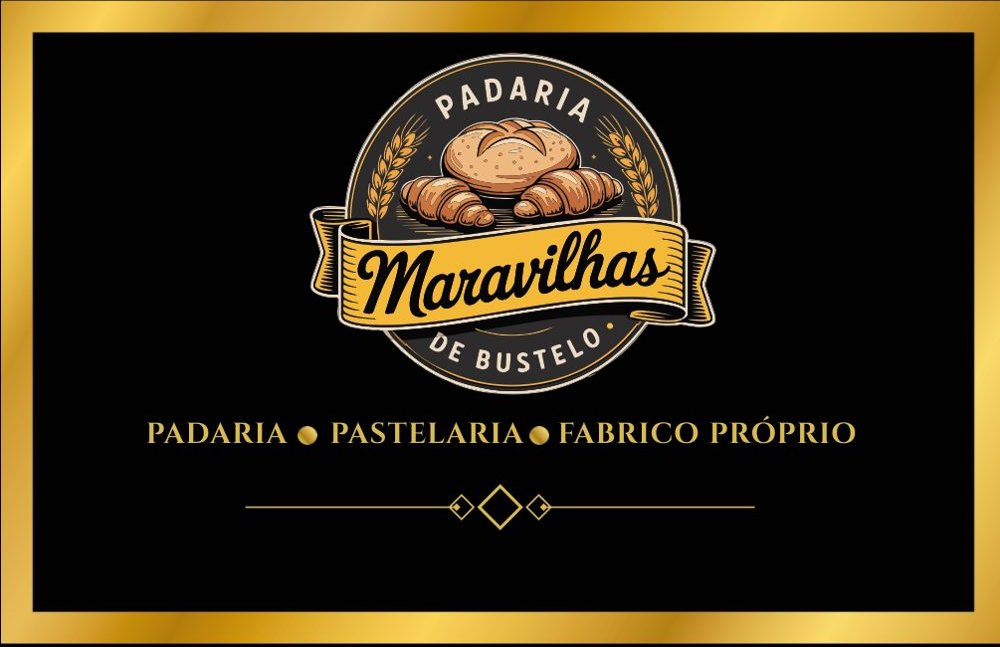
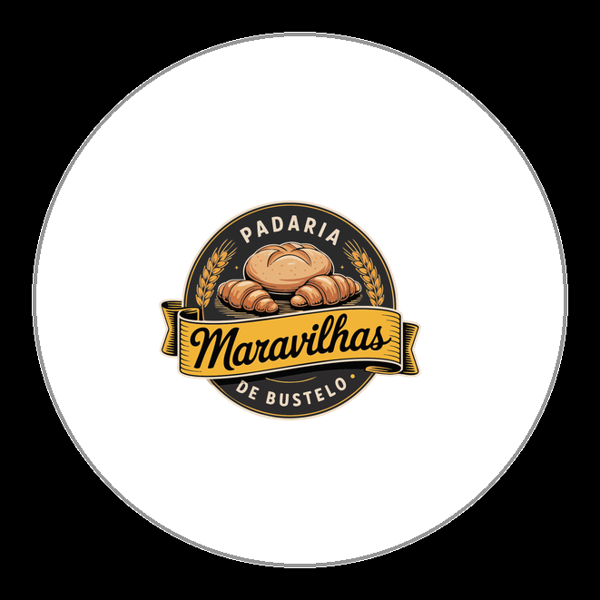
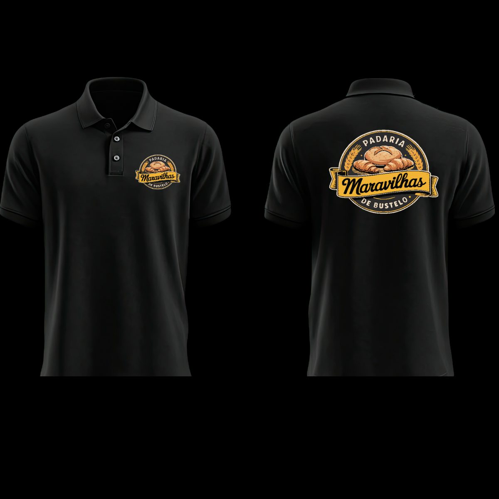
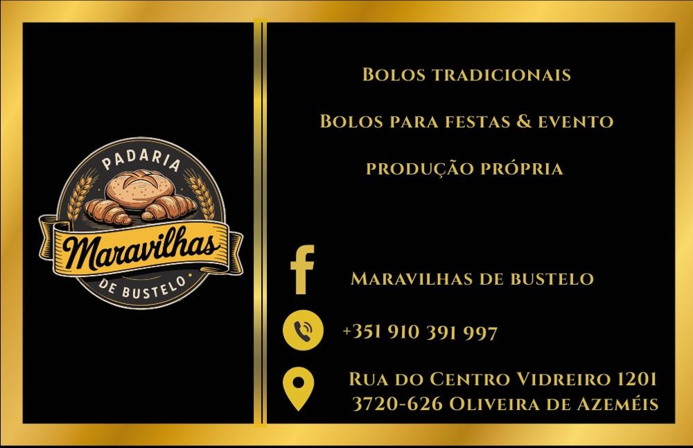
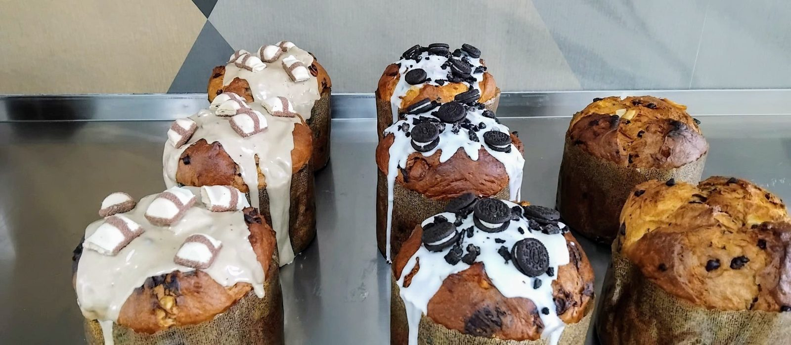
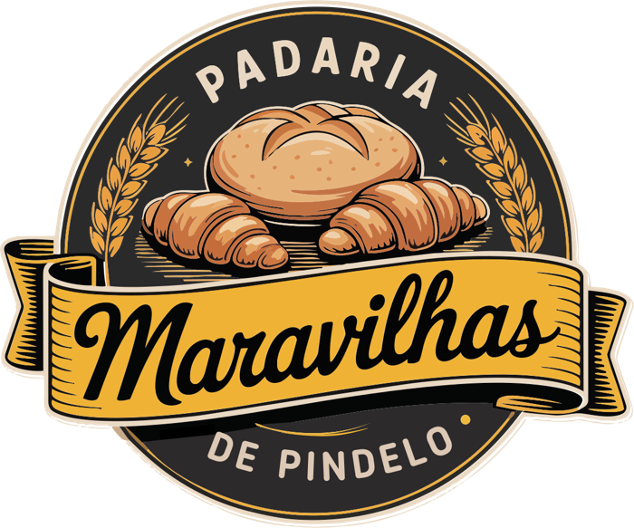

Padaria e pastelaria
Maravilhas de Bustelo
Uma marca de padaria tradicional, feita para ser reconhecida à primeira vista.


O desafio
A Maravilhas de Bustelo é uma padaria e pastelaria de fabrico próprio. Precisava de uma marca que se reconhecesse à primeira vista, na montra, nas caixas e nas fardas da equipa. E tinha de funcionar também na segunda loja, em Pindelo.
A ideia
Desenhei um emblema circular com pães e espigas de trigo, os símbolos do fabrico próprio. O nome vive numa fita ao centro, como um selo de padaria antiga. O dourado lembra o pão acabado de sair do forno. O preto lembra o calor do forno e a madeira do espaço.
O resultado
A padaria ficou com um sistema de marca completo: logótipo, cores, tipografia e tom de voz, reunidos num guião de marca. Preparei o cartão de visita, as etiquetas para as caixas de pastelaria e o logótipo para as polos. Criei ainda a versão do emblema para a loja de Pindelo, e todos os ficheiros seguiram prontos para a gráfica.
A marca em uso
Do forno ao balcão.






Cor e letra
Dourado, preto e creme.
Playfair Display · Bold
Montserrat · Light, Regular e SemiBold
Próximo passo
Tens um negócio com uma história assim?
Conta-me o que fazes. Começamos pela conversa, como neste projeto.
Pedir orçamento